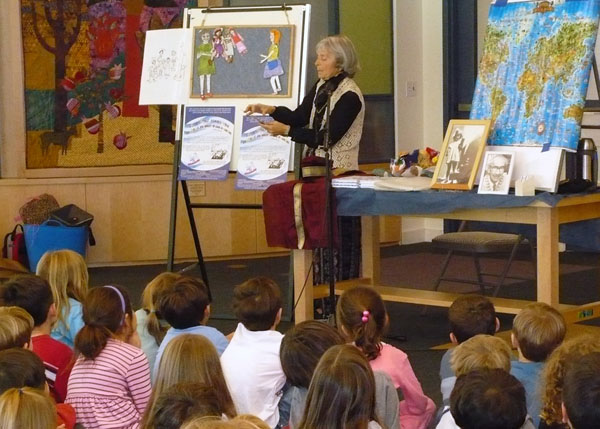

|
Audience Reactions
|
July 7, 2005
Sharona put on a charming presentation at Kibbutz Barkai, with hand puppets and "stick-on" scenery, based on the children's book her father Abraham Regelson wrote about seventy years ago describing a chapter in the family's aliyah to pre-state Israel. Sharona, and the dolls she left behind, are the main characters in the book that will certainly appeal to our own kids and grandkids. The audience, men and women alike, found the presentation thoroughly enjoyable.
Nurit Schechter, Neveh Ilan
September 7, 2005
This week, the Women's Rosh Chodesh Club of Beersheva sponsored a wonderful evening of entertainment with Sharona Tel-Oren, the daughter of Abraham Regelson, who has recently re-published and translated her father's work, The Dolls' Journey to Eretz Yisrael. The book was written in Hebrew originally in the '30's as a serial in the Davar newspaper, and is a delicious whimsical look at life as it was then for new olim.
Sharona spoke beautifully, and entertained us with her dolls, and excerpts from the book. I would highly recommend that you contact her for any group you are connected to.
She can be reached at: steloren@gmail.com and would be pleased to speak in English or Hebrew to groups. Enjoy!
Barbara Goldman, Women's Rosh Chodesh Club of Beersheva
September 7, 2005
A thank you to Sharona Tel-Oren for her presentation and talk of the book The Dolls' Journey to Eretz Israel. Sharona entertained us with explanations, readings and a performance of live dolls. Many of us were so enthralled with the book that we bought multiple copies both in English and Hebrew, which are perfect as gifts for children and adults of all ages.
Reesa Stone, Women's Rosh Chodesh Club of Beersheva
October 27, 2005
I greatly enjoyed your evening, on "The Dolls' Journey to Eretz-Israel", the book in which your father A. Regelson describes the family's journey, with all its adventures and travails as experienced by the dolls in true Israel and Zionist spirit.
The lecture was given in clear, fluent and polished language and in a pleasant voice, which made for attentive listening. The moadon's members enjoyed themselves.
And with the help of the "props" -- the dolls, the plane, the car -- your lecture was enhanced with much charm. May your deeds be blessed. With thanks,
Hadassah Aharoni, Moadon "Beit Ma'on", Rishon leTzion
October 30, 2005
As a member of the Pensioner's Club in Moadon "Beit Ma'on", Rishon le-Tzion, it was a great pleasure to relive and recall my own youth, and to enjoy the story of your family, of which you can well be proud.
And the colorful paper cut-outs that were stuck on the board, so tastefully illustrating the family story! lovely dolls that personified your lives so vividly.
Can there be a nicer and more original realization of the life-story of your family, one so intermingled with our lives and our country?
Many thanks for the enjoyment you gave me and the entire Moadon.
Esther Kreuzman, Moadon "Beit Ma'on", Rishon leTzion
December 17, 2005
Your presentation was delightful! I think everyone present enjoyed it and when I finally left the Social Hall, Rachel our director told me that a lot of the audience had already told her that they had enjoyed hearing you. I am only sorry that we did not attract a larger audience, especially after that excellent article about you in the Jerusalem Post.
Naomi Cohen, Nethanya AACI "Coffee plus"
January 18, 2006
Thank you so very much for your very special and highly regarded contribution to the AACI Seniors Congress in Tiberias. "A Historic Tale of a Unique Aliyah" was a great success. Not just the story, but the exquisite dolls and other props. We were enchanted with these charming little "people" and their story.
Marcia Lewison, President, Seniors Division
Association of Americans & Canadians in Israel
Congress at Caesar's Hotel, Tiberias
January 26, 2006
I enjoyed so much your dolls' story at the AACI Seniors Congress. And I enjoyed even more reading the book!
Ruth Singer, Haifa
January 30, 2006
Our thanks, admiration and appreciation for your fascinating lecture, from the entire audience who heard it, and enjoyed it so much!
Batya Bleicher, Ganei Omer
May 10, 2006
I want to thank you for your fascinating lecture. The pensioners were extremely enthusiastic.
Nehama Rubin, chairperson
Ben Gurion University Pensioners' Association
August 20, 2006
Dear Sharona, Thank you for making the effort to come to us! It was an exciting experience to meet you and hear you tell the story of the dolls, of the captivating book written by your father, and especially – your own story. You have an impressive and enchanting ability to speak, at eye level, to every audience. May you go from strength to strength! In friendship,
David Erlich "Tmol-Shilshom" Cafe/Bookshop, Jerusalem
October 4, 2006
Thank you for the delightful lecture at the AACI Haifa Seniors yesterday. The feedback was very positive, and everyone enjoyed the talk.
Dorothy Fajans, Program Chair, AACI Seniors Haifa
October 11, 2006
I want to thank you for the fascinating lecture which you gave at my bookshop, "Emily". It's not every day that one meets a character out of a book, a live heroine. It was a privilege to hear you talk and perform, and that's what all the comers to your lecture felt -- some were familiar with the book from their childhood, who knew no rest until they could put their hands on a copy.
Not just for its "taste of the past" -- the book "The Dolls' Journey to Eretz-Israel" is relevant and appealing to our times as well. I have no better living proof of this than my own four-year-old daughter, having just finished reading a chapter to her (on her demand). To my surprise (after all, she's only four, and I thought it would be hard for her), she made me promise to continue tomorrow, which I will. Thanks again,
Liat Segol Kornfeld, owner
Emily's Bookshop for Children, Tel-Aviv
January 2, 2007
I went to a lecture given by Sharona Tel-Oren about her father's book and I purchased the book for a friend's daughter's birthday. It is really a very precious book and her describing the story was very moving.
Lynn Sharon
Febuary 14, 2007
I want to thank you for your session at the Israel Museum's Youth Wing Library on Family Day,where you told the children your story – the story of the child Sharona -- mother of the dolls -- as your father Abraham Regelson told it in "The Dolls' Journey to Eretz-Israel". The children were carried away by your enthusiasm, and the session turned into an unforgettable experience!
Heartfelt thanks, Ella Cohen, Director
Youth Wing Library, Israel Museum, Jerusalem
May 2, 2007
 It was a very special welcome that a sixth-grade class (11-12-year-olds) from Ohr HaSharon (a government-sponsored religious school in the small village of Tnuvot in the Sharon Valley) granted me when I arrived for my lecture there. The class had read the book as part of the "Parade of Books" project. An enormous billboard with a huge sign welcomed my appearance , with enlarged illustrations from the book that the children had colored, and with original games that they had composed, based on the book. Then a dramatic presentation, with the pupils dressed up as the dolls, and one as the narrator of the book, Sharona's Abba. A few days after my lecture , this packet of mail arrived from the class, (here are excerpts, in my English translation). Sharona Tel-Oren It was a very special welcome that a sixth-grade class (11-12-year-olds) from Ohr HaSharon (a government-sponsored religious school in the small village of Tnuvot in the Sharon Valley) granted me when I arrived for my lecture there. The class had read the book as part of the "Parade of Books" project. An enormous billboard with a huge sign welcomed my appearance , with enlarged illustrations from the book that the children had colored, and with original games that they had composed, based on the book. Then a dramatic presentation, with the pupils dressed up as the dolls, and one as the narrator of the book, Sharona's Abba. A few days after my lecture , this packet of mail arrived from the class, (here are excerpts, in my English translation). Sharona Tel-Oren
I enjoyed so much your lecture about the dolls and about your family's aliyah! Ohr Lulu
What fun it was that you came to our school! I was so moved by your arrival. The book your father wrote is fascinating! Amit Cohen
 The book your father wrote is so interesting! You delivered a fascinating lecture to my class. I love your style and your father's too. Avia Hadad
I was touched by your lecture. Your stories were very funny. Asaf Attias
The story is fabulous, showing how one can tell a story of aliyah through dolls! May many people of future generations buy this book! Daniel Ben-Aharon
A beautiful lecture! I loved the Dolls' book, and enjoyed so much hearing about the aliya to Eretz-Israel. Ofek Mesika
Your stories were very interesting, and very funny. Aviv Mor
It was fun to be at the lecture! Ravid Lidani
 Your lecture filled me with enthusiasm. I'm so attached to the book, and was thrilled to hear the story of your aliyah. Eliyahu Fenesh
"Enchanting" Sharona, I just loved your fascinating lecture! Chen Alis
An interesting and impressive book! Ophir Gahali
I was really impressed with your so special lecture. What fun it was to hear about your past history. Lior Edny
You've found your way into my heart! I loved the book, and even more, your moving lecture. Chen Gavison
I enjoyed so much the awesome book, the nine lovely dolls and the lecture. Shani Karzam
 Your stories really interested me, and I enjoyed them! Much love, Anael Zaboda
I learned about the wonderful, fascinating book. And wonderful Sharona told us such interesting stories! Alon Ankor
I greatly enjoyed the lecture, was so enthused by it, and was really turned on by the book. It was thrilling to hear about your aliyah story. Yours, Oren Osheri
Thank you for your interesting and wonderful lecture. I really enjoyed reading the book. Yuval Amram
 I've never read a book until the end, but the book about your life and about the aliya to Eretz-Israel – I did! May it succeed for future generations! Aviram Sinai
I was so delighted that you came! The lecture was very well-prepared and fascinating. Galit Sa'ad
I loved your lecture. Your father provided his readers with suspense and excitement! Romi Sarafi
Thank you for the beautiful lecture. I enjoyed it very much, and I hope that YOU liked OUR performance. Nofar Mantsur
Reactions from American tour November 2007
November 4, 2007
Dear Sharona,
On behalf of the Kaplen JCC on the Palisades we would like to thank you for the wonderful program you presented: "The Dolls' Journey to Eretz-Israel" here in Tenafly, NJ.
The children enjoyed your informative and entertaining storytelling and it had special meaning learning about Aliyah to Israel from the real mommy of the dolls. This activity was especially significant this year as we celebrate Israel's 60th birthday. We are grateful for your performance and the impact it had on the participants and wish you continued success.
Sincerely, Naomi Ifhar, Israel Connection Coordinator
Esther Mazor, Adult Director
JCC on the Palisades, Tenafly, NJ
November 7, 2007
Dear Sharona,
Thank you for your educational presentation about Israel's history and your entertaining book that describes days gone by. Your lecture was a wonderful contribution to our Cultural Evening series. The audience enjoyed the rich experience you have provided, and I am glad that some of the attendees have purchased your book as a result.
Should you ever be visiting the USA again in the future, we would like to have you give another such presentation.
Sincerely, Kirstin Grieve, Manager
Ecopolitan, Eco-Health Network, Education and Eco-Shop Minneapolis, MN
November 8, 2007
Dear Sharona,
Thank you so much for your wonderful presentation. Our Minneapolis/St. Paul Chapter greatly appreciates your sharing this wonderful story with us.
Rhoda Redleaf, Program Co-ordinator
Brandeis University, National Women's Committee
St. Paul, MN
On November 11, 2007, Sharona Tel-Oren visited the Senior Kindergarten –Grade Two classes of the Adath Israel and Beth Sholom Religious Schools to present the novel "The Dolls' Aliyah", which was originated by her late father, Dr. Abraham Regelson.
"The Dolls' Aliyah", which focuses on the concept of aliyah to Israel, can be appreciated by students of every age level. Ms Tel-Oren, however, specifically tailored her presentation to younger children, and accordingly, was very successful in conveying to them the concept of aliyah. By using visuals and props (such as the dolls), Ms Tel-Oren was able to both capture and maintain the children's interest during her presentation.
We appreciate Ms. Tel-Oren's visit to our school and know that it expanded the children's knowledge of Israel in a manner that was both entertaining and educational.
Linda Schwartz, School Administrator
Adath Israel Congregational School, Toronto, Canada
November 14, 2007
Dear Sharona,
Thank you very much for sharing your book, The Dolls' Journey to Eretz-Israel, with the students at the Koven Religious School, West Suburban Temple Har Zion. Your ninety-minute program was delightful. Since one of the teachers had been reading the story to the children, they were excited to meet "the real mother of the dolls". Your doll puppets, pictures and maps helped them to visualize your family's journey almost seventy-five years ago and see you as the young child who had to leave behind her precious dolls. Also, the children were thrilled to have their pictures taken with you as you autographed copies of the book for them. During the weeks following your visit, the teachers and students busied themselves preparing for our annual Hanukkah Family Assembly. Now that the last Hanukkah candle has been lit, and the last latkes eaten, the children will have time to hear the conclusion of your heart-warming journey to Eretz-Israel. I am happy to report that I have received a Hebrew copy of the book which I plan to share with the high school students since many will be able to read the Hebrew.
Thank you again, and l'hitraot b'karov,
Alicia Gejman, Principal
West Suburban Temple Har Zion, River Forest, IL
November 16, 2007
Dear Sharona,
I want to thank you again for meeting with my students to share your family's fascinating and informative story. Although you are accustomed to presenting to almost every group and age level, I know that addressing a group of American high school students was a new and perhaps daunting challenge. I can say without hesitation that my juniors and seniors found your talk compelling. As I scanned the room, I saw attentive, engaged students, few of them Jewish or familiar with Zionism except as an abstract idea.
The personal perspective that your presentation brought to my classes in Modern Middle Eastern History was invaluable. Although my students had learned the rudiments of the political history of Palestine and the state of Israel, few of them genuinely appreciated how the lives of Jews in the diaspora might be dedicated to the idea of Israel as their national home, regardless of nation of origin. The story of your family's journey to Palestine in the 1930's, the hardships they faced, and their determination to return to Israel in the 1950's truly brought to life the idea of aliyah and the project of building a new Jewish state.
I should add that quite apart from the political, religious or social questions that draw many Americans to the study of Israel, your family history attracts mature students to its enchanting child's point of view on the adult world. Sharona's reunion with her dolls after an arduous voyage to Tel Aviv, your father's loving, imaginative rendering, and the prominent place of The Dolls' Journey to Eretz-Israel in Israeli children's literature all help explain why we thoroughly enjoyed Sharona's journey to Oak Park and River Forest High School. I am confident that American high school students everywhere would respond with the same enthusiasm.
Warm regards,
Steven Goldberg, Ph. D.
History Division, Oak Park and River Forest High School,
Oak Park, IL
November 26, 2007

Gideon Hausner Jewish Day School was honored to have Sharona Tel-Oren visit to present her personal connection to the classic Hebrew children’s book The Dolls’ Journey to Eretz-Israel. Before a group of 150 Kindergarten through second graders Sharona worked her magic, utilizing colorful visuals such as puppets, posters, maps, and felt board storytelling to share her unique experience of making aliyah from the United States, living in pre-state Eretz Yisrael, and learning of her father’s use of the family’s stories for publication in the newspaper and later creation of a popular childrens’ book. Our young students sat mesmerized for over an hour as Sharona spun her tale of travel and adventure; teachers listened with wonder as she shared vignettes of life in the land of Israel prior to its founding in 1948; and administrators were charmed by Sharona’s energy and insight.
Following the presentation groups of students rushed to Sharona to speak with the real life “mother of the dolls”, asking if they could buy signed copies of the book. Sharona was kind enough to sign tens of copies of her book, all of which were sold out in minutes during our annual school book fair.
As a way of sharing with our young students a truly unique story of travel and living in Israel, this program was exceptional. By speaking about big topics – the early founding of a country, Israel’s place in our hearts, the geography of the land – through the vehicle of a story of a small group of dolls, Sharona succeeded in making abstract ideas personally relevant to even our learners.
We look forward to having Sharona visit again soon to share her story with our older students as well.
Aviv Monarch, Coordinator of Jewish Studies
Gideon Hausner Jewish Day School, Palo Alto, CA
To add your own Audience Reactions contact Sharona Tel-Oren.
For Comments about the book click here.
To return to the Dolls' Journey Menu click here.
To visit the Abraham Regelson home page click here.
|
|